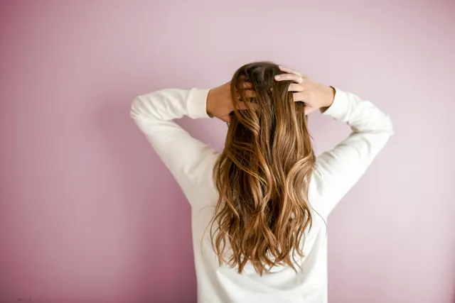
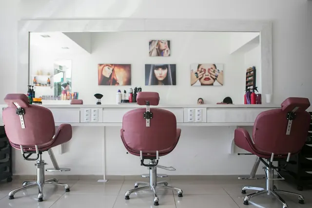

Ateliê de cabelo e unhas · Batel, Curitiba
Um horário só seu, escolhido em um minuto.
Corte, coloração, mechas, escova, manicure e sobrancelha num ateliê pequeno. Você escolhe o serviço, a profissional e o horário, e a confirmação sai pronta para o WhatsApp.

Em destaque
Cor, luz e cuidado com tempo para conversar
Três serviços que mais pedem hora marcada. Toque num cartão para já começar o agendamento.
Como funciona
Cinco passos, nenhuma ligação
Serviço
Escolha o que quer fazer. A duração já entra na conta da agenda.
Profissional
Ou deixe sem preferência e a gente encaixa quem estiver livre.
Dia e hora
Calendário com os horários livres. Os ocupados aparecem riscados.
Seus dados
Nome e WhatsApp. Uma observação, se tiver alergia ou referência.
Confirmação
Resumo na tela e mensagem pronta para enviar pelo WhatsApp.

Foto ilustrativa, não é o salão fictício.
O ateliê
Três cadeiras, uma regra: sem pressa
Cada horário reserva o tempo do serviço inteiro, e não encaixamos ninguém por cima. Quem senta na cadeira tem a profissional só para si, do começo ao fim.
Depoimentos
O que dizem de sentar aqui
Depoimentos de exemplo, escritos para este projeto. Não são clientes reais.
“Fui por causa do balayage e saí com a franja arrumada também. A Helena explicou cada passo e o horário que marquei no site foi o horário em que sentei.”
“Eu odeio ligar para salão. Escolhi o dia no calendário, mandei a mensagem pronta e pronto. A escova durou o fim de semana inteiro.”
“O Caio perguntou como eu penteio de manhã antes de pegar a tesoura. Primeira vez que um corte combinou com a minha rotina.”